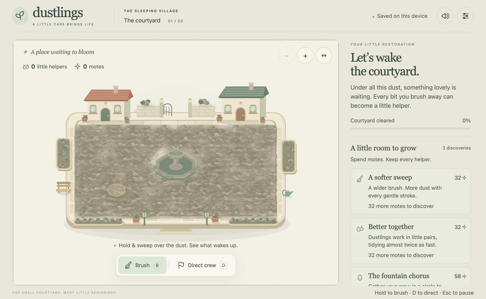
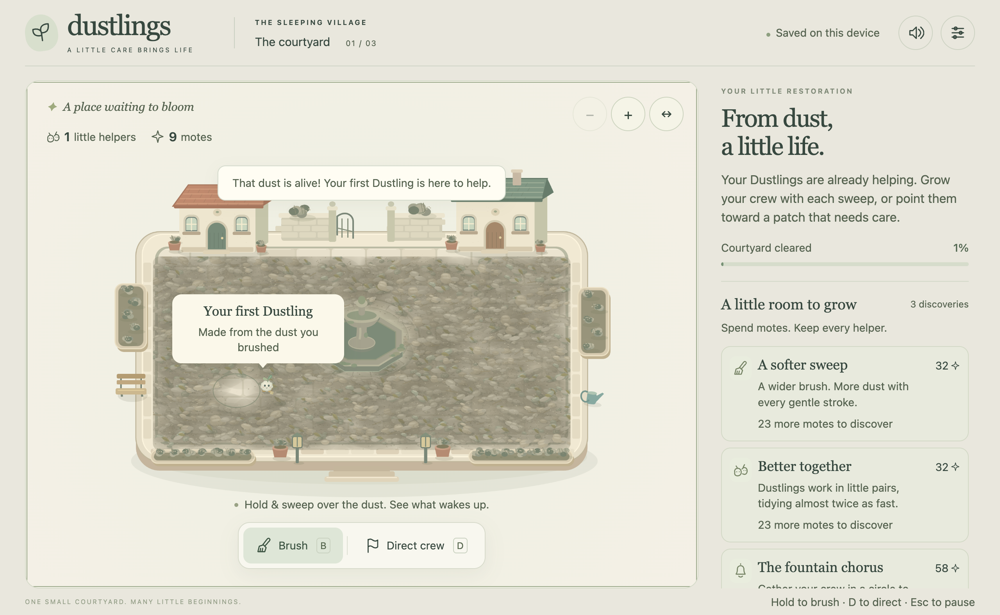
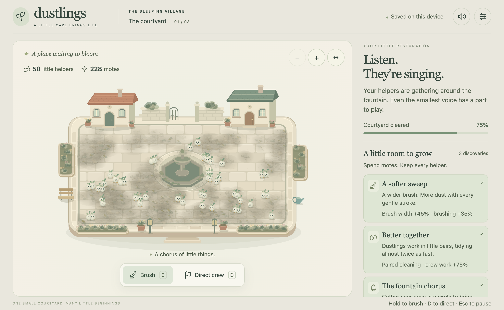
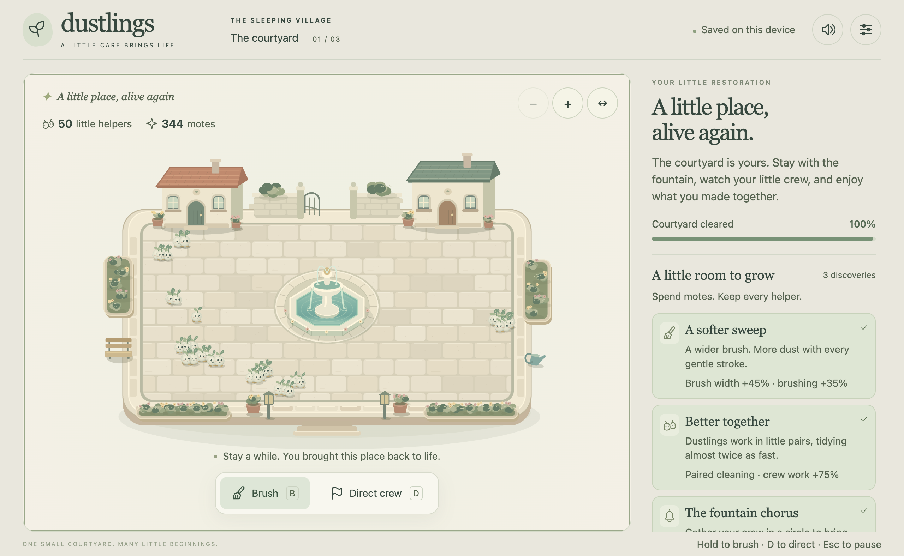

Dustlings, as an app.
Courtyard0.2 native packaging checkpoint. Awaiting human validation. Zero human sessions; player, presentation and owner gates remain open.
These are unsigned development packages. Mac execution was automated on an M4 Pro MacBook Pro; Windows execution and native iOS execution have not occurred. Current gameplay is byte-identical to the frozen browser0.2 experience.
Actual Mac renderer, before and after brushing

Before: actual Mac app,1280×820 outer window, DPR2.
After normal-speed mouse brushing: first helper appears at8.87s. Automated input; no human comprehension measurement.12.33s actual native canvas/audio recording. No edited animation or external music. Listen to judge softness and balance; no human listening result has been recorded.Fifty helpers and the restored courtyard

Imported simulation fixture, not normal player progression.
Completed simulation save after native quit/relaunch. All dust, upgrades, fountain and50 helpers preserved.8 launch/interaction checks · 5 recovery checks · Every frame of the focused60s profile. Focused sample:7,200 frames, p959.2ms, worst9.4ms. An earlier200ms pause did not recur; its cause is unresolved.
Human review still needed: comfort with mouse/trackpad/touch; first-helper clarity; upgrade appeal; control feedback; motion and listening; restoration payoff; voluntary continuation; separate owner acceptance. The new UI refinement cycle will retain this checkpoint as its comparison.